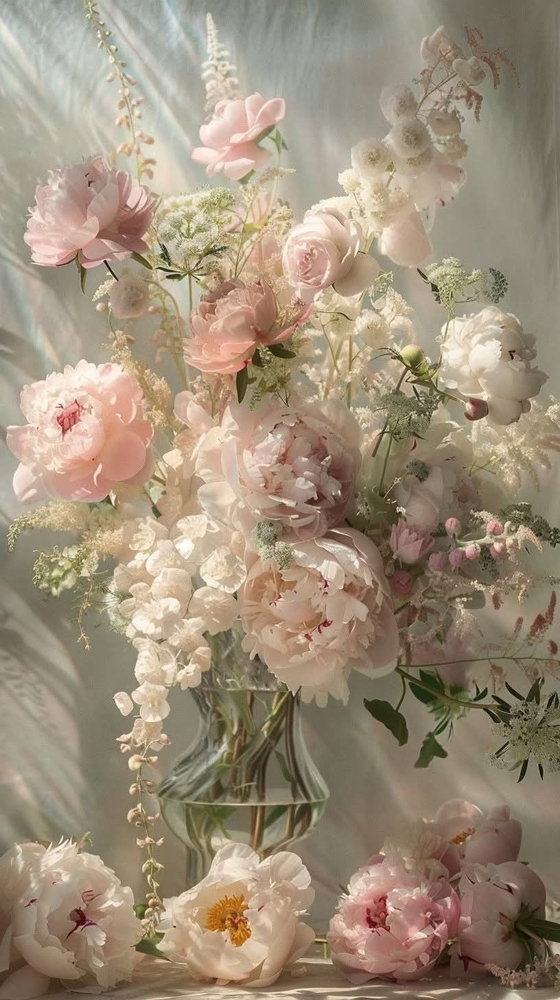
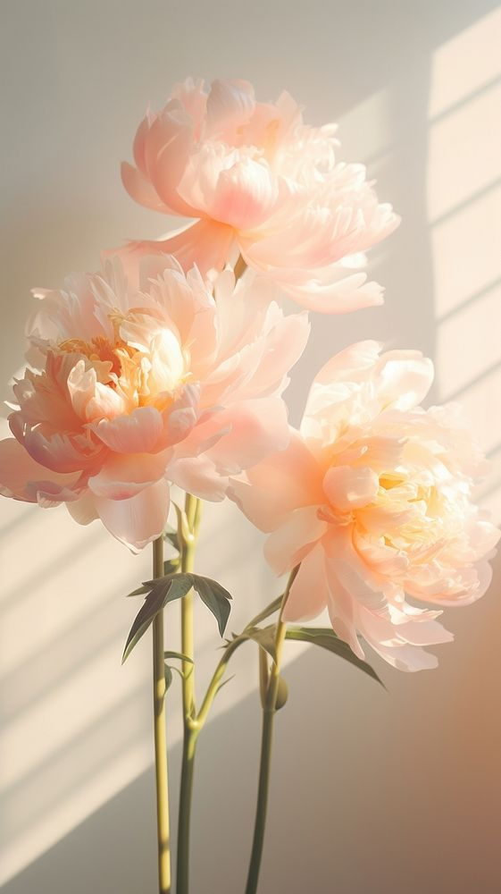

Bujorii au cucerit inimile oamenilor din întreaga lume prin frumusețea lor opulentă, parfumul subtil și eleganța atemporală. Dincolo de aspectul lor spectaculos, aceste flori ascund o bogată simbolistică, transmițând emoții, gânduri și mesaje profunde.
Exploraţi lumea bujorilor

Multitudini de tipuri!
Datorită încărcăturii lor simbolice, bujorii sunt alegerea ideală pentru o varietate de ocazii.
Vizualizează tipurileMetode de îngrijire!
Puțini știu că bujorii au rădăcini adânci și în mitologie, nu doar în grădini.
Citiţi guide-ul
Hrăneşte-ţi curiozitatea!
Cu o estetică deosebită și cu un parfum irezistibil, această floare are o istorie bogată și semnificație deosebită.
Vedeţi întrebări frecvente